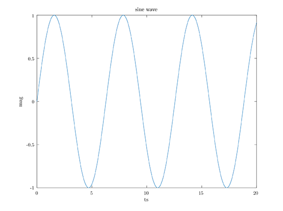

DSP Octave and Faust
chapter 2
Octave
Octave is a math tool like matlab under GNU.
It is used in making calculations as well as in developing and testing algorithms such as digital signal processing algorithms.
Installation Guide
Mac OS Guide
You can install octave using brew
First Install brew from here
After you've installed brew open terminal and type the below command:
brew upgrade && update
Install Octave
Then you can easily install octave using the below command
brew install octave
That's it!
You can type now octave on your terminal to run octave.
Emacs org-mode octave
For emacs users you can run octave examples using org-mode code blocks.
First install ac-octave using MELPA
Then insert the below code in your init emacs file
;Octave e-lisp
(require 'ac-octave)
(add-hook 'octave-mode-hook
'(lambda () (ac-octave-setup)))
Restart emacs and test octave
Simple Example 01
#Example 01
G=1+1
H=5*2
G*H
#print the values
printf("The G value is %d\n", G);
printf("The H value is %d\n", H);
#another way to print
#disp(["The A value is ", num2str(A)]);Results:
20
More Examples
Simple Example 02
A=[1 2 3];
B=[5 4 3];
A+B
%etc%Results:
| 6 | 6 | 6 |
Creating scripts for octave
You can create script files with octave code and the extension .m Then you can run them using their name.
example: testOctave.m
#sh example
testOctaveExample of sine wave plot
hf = figure ();
axis ([0, 20, -1, 1]);
x = 0:0.01:20;
plot (x, sin (x));
xlabel ("ts");
ylabel ("mag");
title ("sine wave");
print (hf, "./plots/plotSineWave3.pdf", "-dpdflatexstandalone");
system ("pdflatex ./plots/plotSineWave3");
Beginners tutorial here
Faust
Faust is a functional programming language for sound synthesis and audio processing with a strong focus on the design of synthesizers, musical instruments, audio effects, etc( faust)